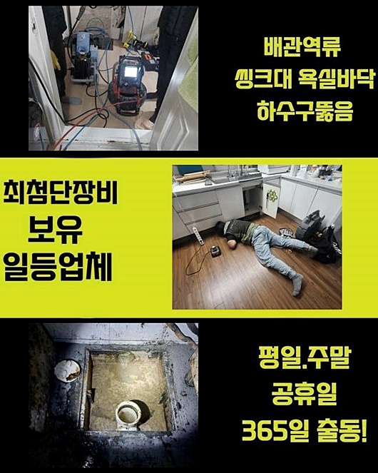
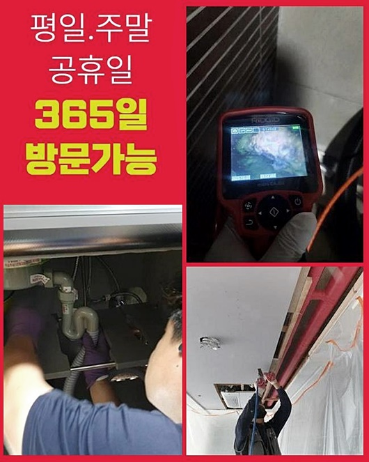
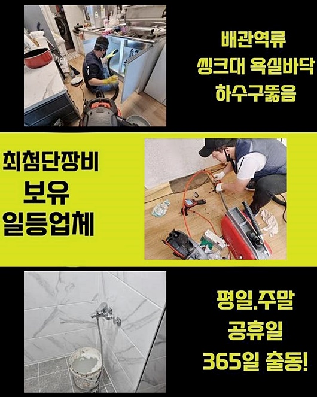
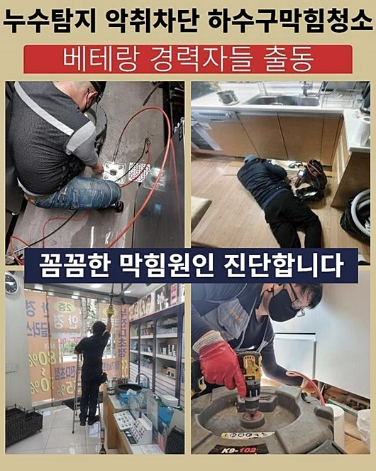
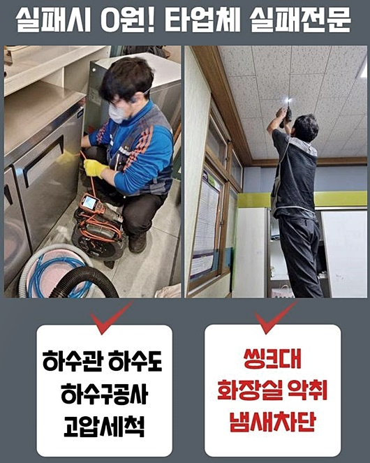
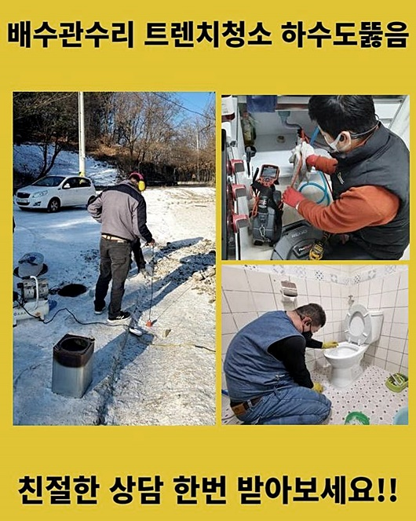
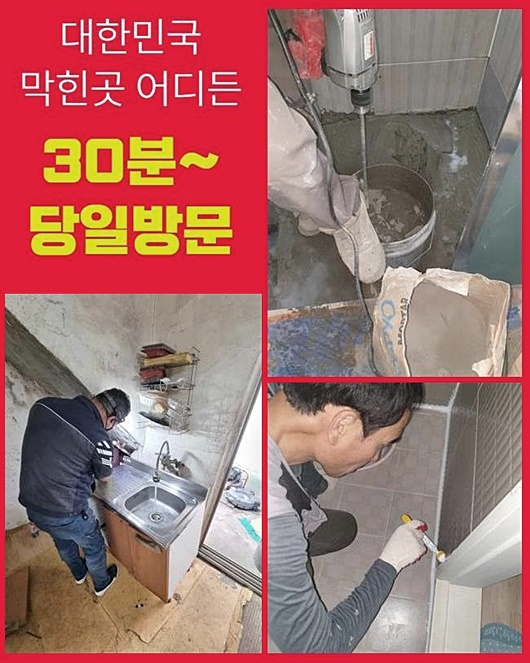

🏠 서초구 반포동욕실뚫음 반포본동 배관뚫기 설비업체
용인 싱크대막힘 전문 시공 후기

📋 작업 개요
- 위치: 용인
- 서비스 유형: 싱크대막힘, 배관막힘, 역류해결, 뚫는업체, 배관청소, 고압세척, 설비공사, 악취차단
- 작업 일시: 2024. 7. 11. 9:38
- 업체명: 하수구수사대 (010-5615-2118)
🔍 문제 상황
서초구 반포동욕실뚫음 반포본동 배관뚫기 설비업체
여러분 주목해주십시오 배관청소에 대한 이야기를 해드릴게요
배수파이프는 다양한 오물이 방출되는 길목이며 홀의 단면이 비좁게 형성되어 있어요
정결한 액체성분만 유입되는 경우라 하면 막힘이 생기는 일은 없겠지만 혹여나 이물들이 혼합되면 갑갑한 배수구로 변할 수도 있습니다
유달리 일회용 플라스틱이나 장난감 등 여러 가지의 이물들이 믹스되는 경우 배관이 차단되곤 합니다 이러면 자기 힘으로 수선하기 어려운 순간이 많아요
안에서 벌어진 일은 바깥쪽에서 인식하기 곤란한데요 이물들이 적체되어 밖에 토출되지 않고서는 판단하기 어렵죠
다양한 식기류들을 씻는 싱크대 주변은 평상적으로 신경을 쓰지 않는다면 배수 속도가 느려지거나 막힘발생이 왕왕 터지는데요
간혹 국물요리 등에서 방출된 유분이 고착화되면 간단히 처리하기 힙겹죠
이땐 파이프청소를 제대로 이행하는 숙련자를 찾아 점검을 우선 받아보시길 바라요
우리팀은 느닷없이 발발한 배관차단 현상으로 손님께서 긴박한 해소를 바라셨기에 즉각 방문을 하였답니다
의뢰자의 요망에 부응하여 지점에 도달하게 되면 저흰 다채로운 기기들과 기술력을 이용하여 배수관을 세심하게 세정했죠
주말 저녁에 세탁기를 사용하는 과정에서 퇴수구에 물이 안 빠져서 전화하셨다고 합니다
보편적으로 배관이 정체되면 자기 힘으로 수선을 시행해보려 애쓰는데요
배수구 세정제를 쓰거나 칫솔과 같은 걸 쓰실때가 많아요 반면 배수관이 파괴될 수도 있으므로 자제하실 필요가 있어요

🔎 원인 분석
💡 전문가 진단: 정밀 진단 장비를 사용하여 슬러지의 고착 여부를 판명하고 타격/세척 작업을 실시했습니다.
예상과는 다르게 파이프는 충격에 취약하기에 이차적인 충격으로 물이 새나갈 수 있습니다
다양한 방법으로 고치려 계획하시다가 쉽게 안되었기 때문에 하수관 세척을 전문적으로 하는 기술자를 찾으셨다고 해요
이러한 사태가 왜 발발했는지 진단하는 작업에 주안점을 두어야 하겠죠? 우린 기기들을 갖추고 문제가 생긴 지점에 당도하였습니다
현장상황에 의거하여 청소의 범위가 다르며 활용하는 설비도 다릅니다
전문인은 이유를 찾아내고 적절한 방안을 제시해야 해요
또한 본시공을 실행하기에 앞서서 건축물의 형태를 간파할 수 있어야 한답니다
현장상황에 의거하여 석션장비를 일차적으로 활용하여 입구 주변의 이물을 처리하고 내시경촬영 기기를 삽입해 하수관을 진단하는 예시도 있답니다
막힘이 일어난 곳을 순시해보니 역류가 일어나 집 안까지 유입된 것을 알게 되었어요
갑갑해하는 손님을 마주하니 매우 안타까웠어요 손상된 부분을 점검하니 모두 교체해야 하는 상황이었죠 구린내도 심했습니다
따라서 집에서 조치하다가 제대로 되지 않아 방치하게 되면 막대한 비용 사용을 발생시키는 경우도 많아 고장 즉시 조속하게 고치는 게 마땅합니다
배수문의 상황을 지켜보니 침전물이 가득해서 내시경cctv를 넣기가 난삽해서 우선 흡입기기로 잔재들을 세정했죠
일반적 뚫음 공구로 통수도구가 있긴 하나 역류증세가 나타날 때는 고형물이 방해가 되어 석션설비를 활용합니다
잔재들을 빨아들여서 소제하기에 침전물쪽에 목표점을 맞추어야 해요
이 기기로 통로 시작점을 클리닝하였고 내시경설비를 삽입해 진단을 해봤어요
내시경설비는 후미진 배수관 안을 즉각적으로 확인할 수 있는데요

🔧 작업 과정
동기와 문제의 지점을 관찰하는데에 커다란 조력을 해줍니다
배관카메라를 넣고 내측의 모양새를 보니 커다란 노폐물더미가 내려가지 않고 체류중이었습니다
이것들이 엉겨서 하수관 중앙에 접착되어 있었기에 배수길이 막혔기에 수돗물이 못빠지고 밖으로 유출까지 된 것이에요
주범은 기름때라고 볼 수 있었어요
배수관은 다채로운 오수가 유입되기에 물에 잘 풀리지 않는 것들도 수용할 수밖에 없답니다
이런식으로 잔재들이 긴 시간 적체되어 하수관을 막아버리는 상황이 곧잘 생겨요
평상시에 고장을 차단하려는 목적으로 물을 끓여서 한번에 흘려보내 비정상적이지는 않은지 테스트를 시행할 것을 권해드립니다
파이프 안에 유분 덩어리들이 체류하였기에 전문가용 장비를 바탕으로 소멸시켜보기로 계획했습니다
분쇄 및 관통 기계들을 적용하여 배관클리닝을 실시하였죠
샤프트기기는 하수관에 지속적으로 정체하였던 찌꺼기를 없애주기도 하며 끈끈해진 물질들을 대상으로도 적용설명드릴 수 있습니다
강한 드릴기기로 세척하는 것이기에 장시간 체류했던 침전물도 깨끗이 없앨 수가 있어요
반면 고속으로 돌아가기 때문에 전문가가 아닌 경우 하수관을 훼손을 일으킬 수 있답니다
따라서 해당 장비류를 쓸 때엔 능숙한 사람이 앞장서야 하는거죠
샤프트기기를 통해서 기름때 등을 자그맣게 만드는 공정을 이행중입니다
파이프의 일부분에만 기름때가 누증된 모습이었고 주변 처소는 깔끔한 모양새라 예상보다 배관 클리닝 업무를 잽싸게 행할 수 있었습니다
지속하여 내시경설비를 통해 파이프 내측을 관찰하면서 기기를 돌려 이물들을 세척해 나갔더니 점차 청결하게 변하는 모양새가 관찰되었죠
이상없는지 알아보려는 목적으로 내시경cctv를 집어넣어 보았죠
화면을 통해서 확인하니 이전까지 배관안을 메웠던 고형물들이 어느새 없어져 정결해진 안쪽의 모양새를 볼 수 있었지요
마무리 공정으로 물내림에 문제가 없는지 점검에 들어갑니다
일시에 많은양을 들이부었는데 신속히 없어지는 모습을 알게 되었어요
아랫부분 장의 역류가 생겼던 지점도 체크해가며 물내림을 하였던 것인데 금시 정체없이 고이 빠지는 걸 확인하고 마무리하게 되었어요
마지막엔 의뢰자님에게 막힘이 해소되었다는 걸 바로 보실 수 있게끔 안내하였죠
이번과 같은 공사 과정에서 보셨던 것과 유사하게 물흐름 정체로 역류까지 생기는 증세 대개가 관 내측이 고장난 것이 원인이라 알려드릴 수 있겠습니다


✅ 작업 완료
물흐름 차단 등은 회피하기 힘겨운 사안이죠
따라서 배관막힘이 생기면 곧바로 권위자의 진단으로 수리하는 것이 좋답니다
이래야 과도한 금전 손실을 방예할 수가 있답니다
특별히 기름때 등으로 고장이 생긴거라면 관련 기능을 가진 전문인에게 전화하여 관 내부를 클리닝 해 보실 것을 권장합니다
금전적인 내용도 고려한 해결방안이라고 강력하게 말씀드려요
빨간날이라도 무관하게 의뢰주시면 민첩하게 출동하겠습니다




⚠️ 주방 싱크대 배관 막힘 예방 수칙
- ✅ 기름기가 묻은 식기나 프라이팬은 설거지 전 키친타올로 반드시 기름때를 닦아내세요.
- ✅ 주기적으로 싱크대 개수대에 뜨거운 물을 가득 받아 한 번에 내려 배관 내부 기름을 씻어내세요.
- ✅ 배수구 거름망을 미세한 필터로 사용하시고 음식물 찌꺼기가 틈으로 새어 들지 않게 관리하세요.
- ✅ 베이킹소다와 식초를 뜨거운 물과 함께 일주일에 한 번씩 부어주면 배관 살균과 막힘 예방에 좋습니다.
💡 핵심 정리
- 확실한 장비 작업(내시경 점검 및 샤프트 스케일링)으로 원인을 뿌리 뽑습니다.
- 작업 후 1년 이내에 동일한 부위 재발 시 100% 무상 A/S 서비스를 보장합니다.
- 서울 · 경기 · 인천 전 지역에 24시간 언제든 긴급 출동할 수 있도록 항시 대기 중입니다.
❓ 자주 묻는 질문 (FAQ)
🚨 용인 싱크대막힘 문제로 고민이신가요?
정확한 원인 진단과 확실한 시공으로 재발 없는 해결을 약속드립니다.
24시간 긴급 출동 | 서울 · 경기 · 인천 전지역 | 1년 내 재발 시 무상 A/S